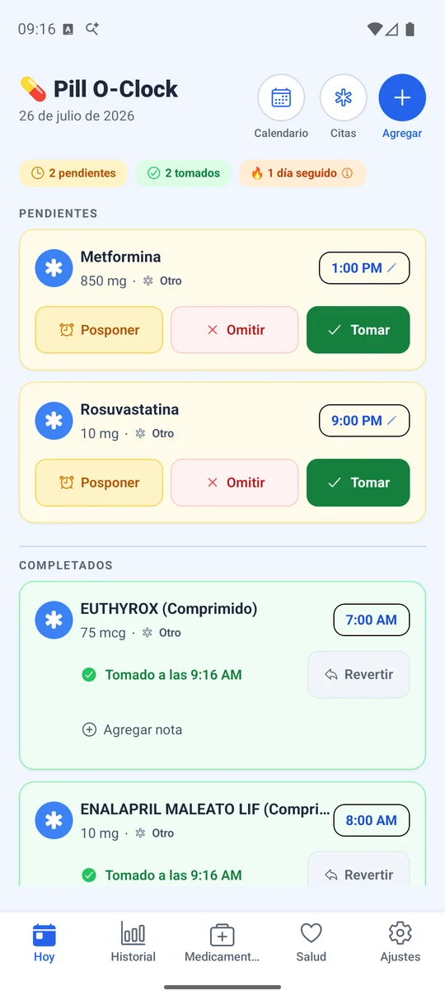
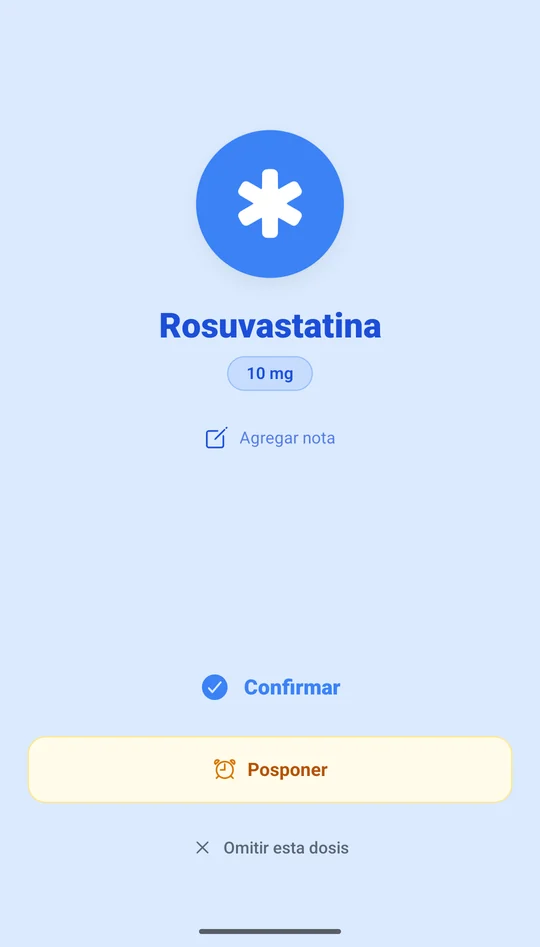
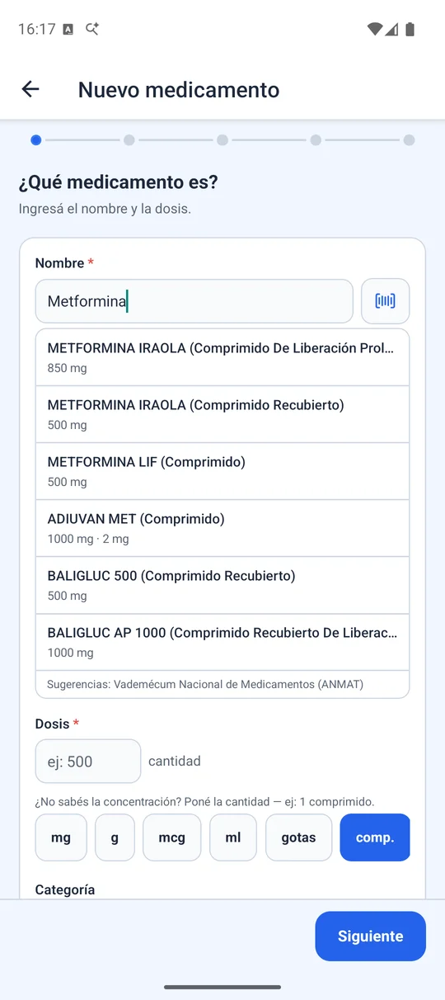

La alarma de medicamentos que sí te despierta.
La mayoría de los recordatorios son una notificación que el teléfono silencia. Pill O-Clock suena como un despertador: en modo silencio, encendiendo la pantalla, y mostrándose sobre el bloqueo hasta que respondas.
Todavía no está en la tienda pública: seguimos en prueba cerrada mientras completamos la verificación que Google exige a las apps de salud. Escribinos y te sumamos.

Pensada para tratamientos reales, no para el caso fácil
Una pastilla por día es simple. El problema empieza con seis medicamentos, uno cada 48 horas, otro que baja de dosis cada semana y una inyección los martes.
Una alarma de verdad, no una notificación
Usa el canal de alarma del sistema, el mismo que tu despertador: suena aunque el teléfono esté en silencio, enciende la pantalla y aparece sobre el bloqueo. Si no respondés, vuelve a insistir en lugar de rendirse.
- Confirmar, posponer o saltar sin desbloquear
- Sigue sonando hasta que respondas
- Puede leer en voz alta el nombre y la dosis

Los esquemas que otras apps no saben escribir
Cada dos días, ciclos con descanso, descensos graduales de corticoides, o una sola toma el 20 de cada mes. Vos describís el tratamiento como te lo indicaron y la app resuelve qué días toca y con qué dosis.
- Cada N días, ciclos y día fijo del mes
- Descensos graduales con la dosis correcta por fecha
- Inyectables con rotación de zona
Conoce los remedios que se venden acá
El buscador usa el vademécum de ANMAT, así que encontrás el nombre comercial que dice la caja. Y si anotás una alergia, te avisamos al cargar un medicamento que la contiene — con los nombres en castellano, no traducidos de un catálogo extranjero.
- Escaneo del código de barras del envase
- Aviso de alergia y de principio activo repetido
- Se adapta al país donde estés

Para cuidar a otra persona, no sólo a vos
Podés llevar varios perfiles en el mismo teléfono — tu mamá, tu hijo — y las alarmas de todos suenan aunque estés mirando otro perfil. Cuando alguien más toma la posta, generás un resumen de una página para compartir.
- Perfiles cuyas alarmas nunca se pisan
- Resumen para quien te reemplaza
- Ficha de emergencia visible sin desbloquear
Tu historia te pertenece, y te la podés llevar
Registrás presión, glucemia, peso y cómo te sentís, y llevás un informe en PDF a la consulta. Si algún día querés irte a otra app, exportás todo en un formato clínico estándar. No hay forma de quedar encerrado.
- Informe en PDF para el consultorio
- Exportación clínica estándar (HL7 FHIR)
- Copia de seguridad cifrada, guardada donde vos quieras
Lo que tomás no es asunto de nadie más
Tu lista de medicamentos dice más de tu salud que casi cualquier otro dato. Por eso la app funciona sin cuenta: no hay usuario, no hay servidor nuestro, no hay nada que filtrarse.
Sin cuenta
No pedimos mail, teléfono ni nombre. Instalás y usás. No existe un perfil tuyo en ningún lado porque no hay dónde guardarlo.
En tu teléfono, cifrado
Los datos viven en una base cifrada dentro del dispositivo. Las copias las hacés vos, con tu contraseña, y las guardás donde quieras.
Sin farmacéuticas
No tenemos acuerdos con laboratorios ni farmacias, y no los vamos a tener. Ninguna marca puede pagar para aparecer en tus recordatorios.
Y las dos excepciones, dichas de frente
Prometer «nada sale nunca» sería mentira, así que preferimos el detalle exacto. Sólo dos funciones se comunican con afuera:
- Reportes de fallas: si la app se cierra sola, se envía el informe técnico del error. No incluye tus medicamentos ni tu historial.
- Mapa de turnos: si buscás la dirección de un consultorio, esa búsqueda va a Google Maps, como en cualquier mapa.
Cómo se sostiene: la app es gratuita y muestra un aviso publicitario en dos pantallas secundarias, Historial y Salud. Nunca en la alarma, nunca en tu lista del día, y sin publicidad personalizada. Preferimos decírtelo acá antes de que lo descubras solo.
Lo que no vamos a hacer nunca
Una app de salud se juzga tanto por lo que se niega a hacer como por lo que hace. Estas son las puertas que dejamos cerradas a propósito.
Si no se lee, no sirve
Quien más necesita un recordatorio de medicamentos suele ser quien peor ve la pantalla. Lo tratamos como un requisito, no como una preferencia.
Modo simple
Texto y botones más grandes en toda la app, con contrastes pensados para leerse a la distancia de brazo.
Alarma hablada
El teléfono puede decir en voz alta el nombre del medicamento y la dosis, para cuando los anteojos no están cerca.
Sin ruido visual
Cero animaciones innecesarias y una pantalla de alarma con tres opciones claras: confirmar, posponer, saltar.
Esta misma página aplica el criterio: texto base de 18 px, contraste verificado, navegable por teclado y respeta si pediste reducir las animaciones.
Lo que suelen preguntarnos
¿Dónde la descargo?
Todavía no está publicada al público. Está en prueba cerrada en Google Play mientras completamos la verificación que Google exige a las apps de salud. Escribinos y te sumamos a la lista de prueba.
¿Es gratis? ¿Dónde está el truco?
Es gratis, sin límite de medicamentos y sin suscripción. Se sostiene con un aviso en dos pantallas secundarias, nunca en la alarma ni en tu lista del día, y sin publicidad personalizada.
Si no hay cuenta, ¿qué pasa si pierdo el teléfono?
Podés exportar una copia de seguridad cifrada con tu contraseña y guardarla donde prefieras, por ejemplo en tu propio Drive. En el teléfono nuevo la importás y sigue todo igual. La copia es tuya: nosotros no tenemos acceso.
¿Funciona sin internet?
Sí. Las alarmas, el buscador de medicamentos y tu historial funcionan completamente sin conexión, porque todo está en el teléfono.
¿Reemplaza el consejo de mi médico?
No, y no lo intenta. Los avisos de alergia o de principio activo repetido son informativos y nunca te bloquean: sirven para que consultes, no para decidir por vos. Ninguna decisión sobre tu tratamiento debería tomarse con una app.
¿Hay versión para iPhone?
La app ya está portada a iOS y funcionando en dispositivo, pero todavía no está publicada en la App Store. Android va primero.
¿Querés probarla antes que nadie?
Estamos sumando gente a la prueba cerrada, sobre todo si manejás varios medicamentos o cuidás a alguien que lo hace. Contanos tu caso.